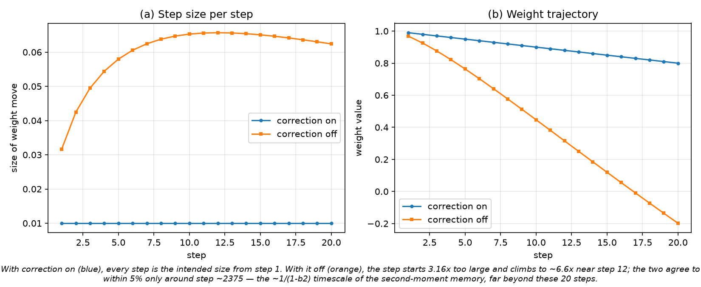
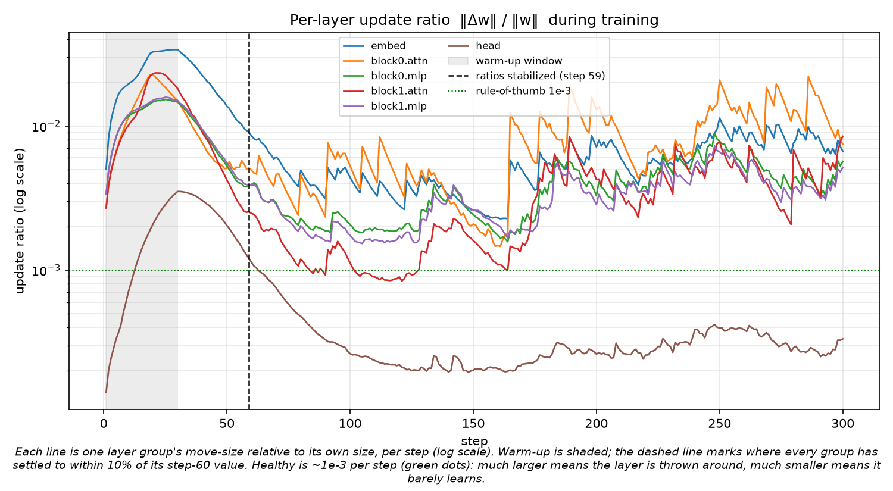
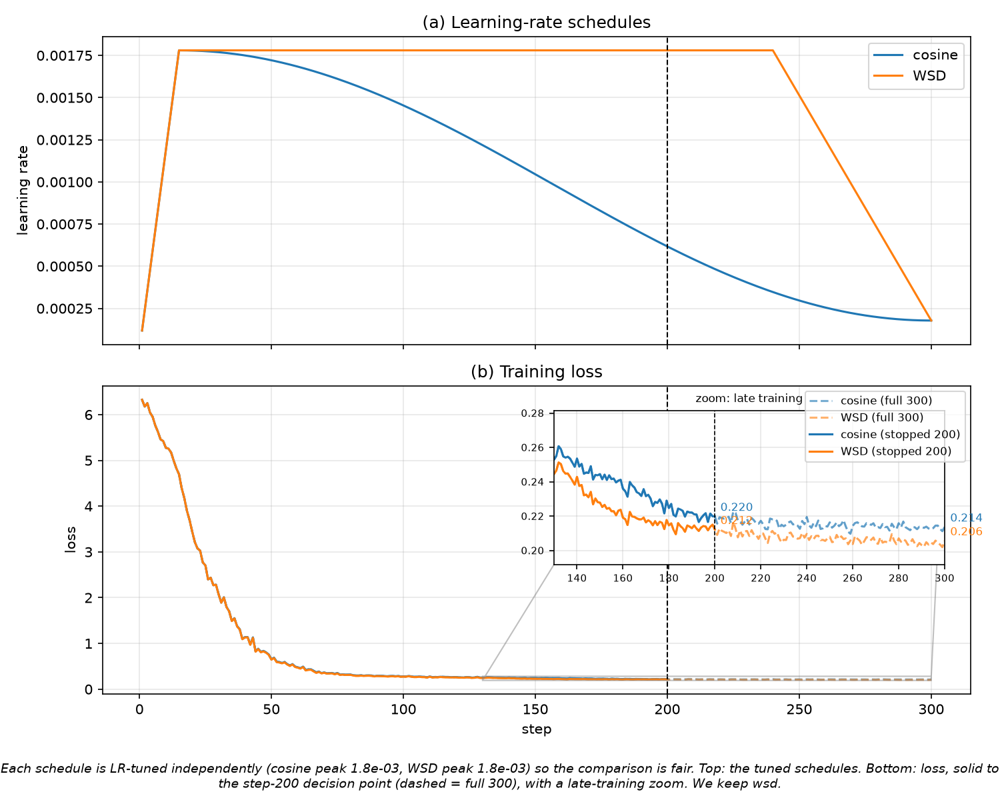
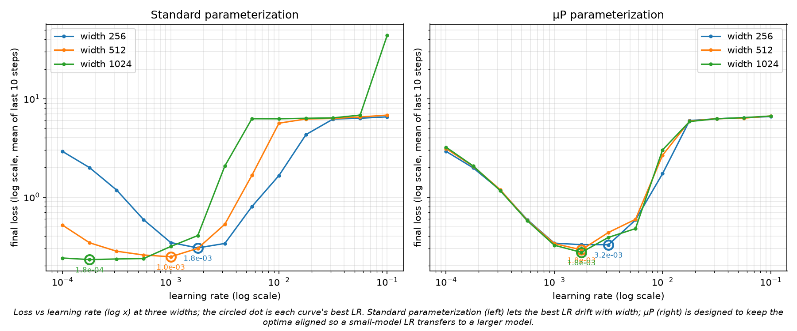

Results at a glance
The headline number from each experiment. Every one is regenerated from run logs with
make report.
| Experiment | Headline |
|---|---|
| 1 · Adam by hand | Matches PyTorch's Adam to <1e-9; one weight ends at 0.984124 after five alternating gradients. |
| 2 · Bias correction | Step 1 is 0.0100 with correction vs 0.0316 without — uncorrected is 3.16× larger, not smaller. |
| 3 · Update ratios | Per-layer move sizes settle by step 59 (warm-up is 30 steps); healthy ratios are ~1e-3. |
| 4 · Cosine vs WSD | Loss @200: cosine 0.217 / WSD 0.269; @300: 0.205 / 0.222 — cosine lower at both. |
| 5 · µP LR transfer | Standard best-LR drifts ~10× with width; µP pins it (widths 512 & 1024 both 1.78e-3). |
1 · Adam, computed by hand
What is the Adam optimizer actually doing to a single weight?
Rather than trust a library, this experiment re-implements Adam's arithmetic in plain Python and walks
one weight through five hand-picked "hints" (gradients) that alternate between go-up and go-down. Every
intermediate number is printed. The hints flip sign every step, yet the weight barely zigzags: the running
average m cancels the back-and-forth, so the weight only moves in the direction that persists.
| t | g | m | v | m̂ | v̂ | step | w |
|---|---|---|---|---|---|---|---|
| 1 | 0.500 | 0.050000 | 0.00025000 | 0.500000 | 0.25000000 | 0.01000000 | 0.990000 |
| 2 | -0.400 | 0.005000 | 0.00040975 | 0.026316 | 0.20497749 | 0.00058125 | 0.989419 |
| 3 | 0.400 | 0.044500 | 0.00056934 | 0.164207 | 0.18996999 | 0.00376746 | 0.985651 |
| 4 | -0.500 | -0.009950 | 0.00081877 | -0.028933 | 0.20500002 | -0.00063902 | 0.986290 |
| 5 | 0.500 | 0.041045 | 0.00106795 | 0.100230 | 0.21401804 | 0.00216656 | 0.984124 |
2 · Why the "correction" step exists
Adam has two lines of math that look optional. What happens if you delete them?
Adam's memories m and v both start at zero and are biased toward zero until they
fill up. Contrary to the common intuition that uncorrected steps are tiny at first, they are actually
larger: because β₂ (0.999) is far closer to 1 than β₁ (0.9), the
uncorrected second moment is suppressed more strongly, so dividing by it inflates the step. It overshoots —
peaking around 6.6× the intended size near step 12 — and only then eases back.

3 · How much does each layer actually move?
Are all parts of the network learning at a similar pace, and how long does warm-up matter?
A tiny language model trains for 300 steps. After every step, for each layer, we compute one ratio: the size of the change divided by the size of the layer — "what fraction of itself did this layer move?" Training starts with a 30-step warm-up. The dashed line marks where every layer has settled to within 10% of its step-60 value.

4 · Two ways to slow down
Should the step size taper off gradually, or stay high and then drop sharply?
Two identical models train on identical data; only the learning-rate schedule differs. Cosine decays smoothly after warm-up; WSD holds the peak flat, then drops fast at the end. At step 200 cosine has already slowed while WSD is still at full speed — so WSD looks worse there. The loss panel carries a zoom inset because the whole story lives in a narrow band late in training.

5 · Does the best step size change when the model gets bigger?
If you tune the ideal learning rate on a small model, can you reuse it on a larger one?
The model is built at three widths (256 / 512 / 1024) and 13 learning rates are tried on each — once with a standard setup and once with µP, a recipe designed to keep the best learning rate fixed as width grows. In the standard panel the best LR drifts down about 10× with width. With the completed µP recipe (width-invariant attention scaling plus a readout multiplier), the optima essentially stop moving: widths 512 and 1024 land on the same best LR.

The µP spread is 1.78× versus the standard parameterization's ~10× — that is the transfer µP promises: tune the learning rate on a small model and reuse it on a big one.